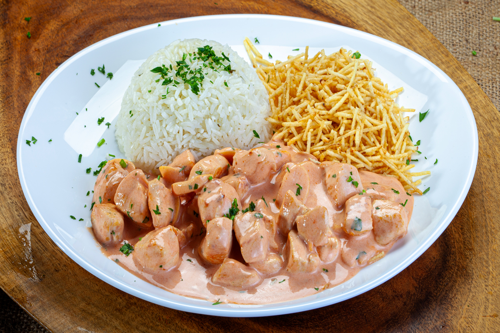

Strogonoff Recipe
Back to Home

Photo of Strogonoff with rice and chipsticks
Strogonoff is a Russian dish that became popular in Brazil.
It consists of pieces of meat (beef or chicken) braised and coated in a creamy sauce
made with cream, ketchup, mustard, and mushrooms.
It is traditionally served with rice and chipsticks.
Ingredients
- 500g of beef or chicken
- 1 onion
- 2 cloves of garlic
- 200g of mushrooms
- 1 cup of cream
- 2 tablespoons of ketchup
- 1 tablespoon of mustard
- Salt and pepper to taste
Steps
- Cut the meat into small pieces and season with salt and pepper.
- In a pan, sauté the onion and garlic until they are soft.
- Add the meat to the pan and cook until it is browned on all sides.
- Add the mushrooms and cook for a few more minutes until they are tender.
- In a bowl, mix the cream, ketchup, and mustard together.
- Pour the sauce over the meat and mushrooms in the pan and stir well to combine.
- Let it simmer for about 10 minutes until the sauce thickens.
- Serve hot with rice and chipsticks.